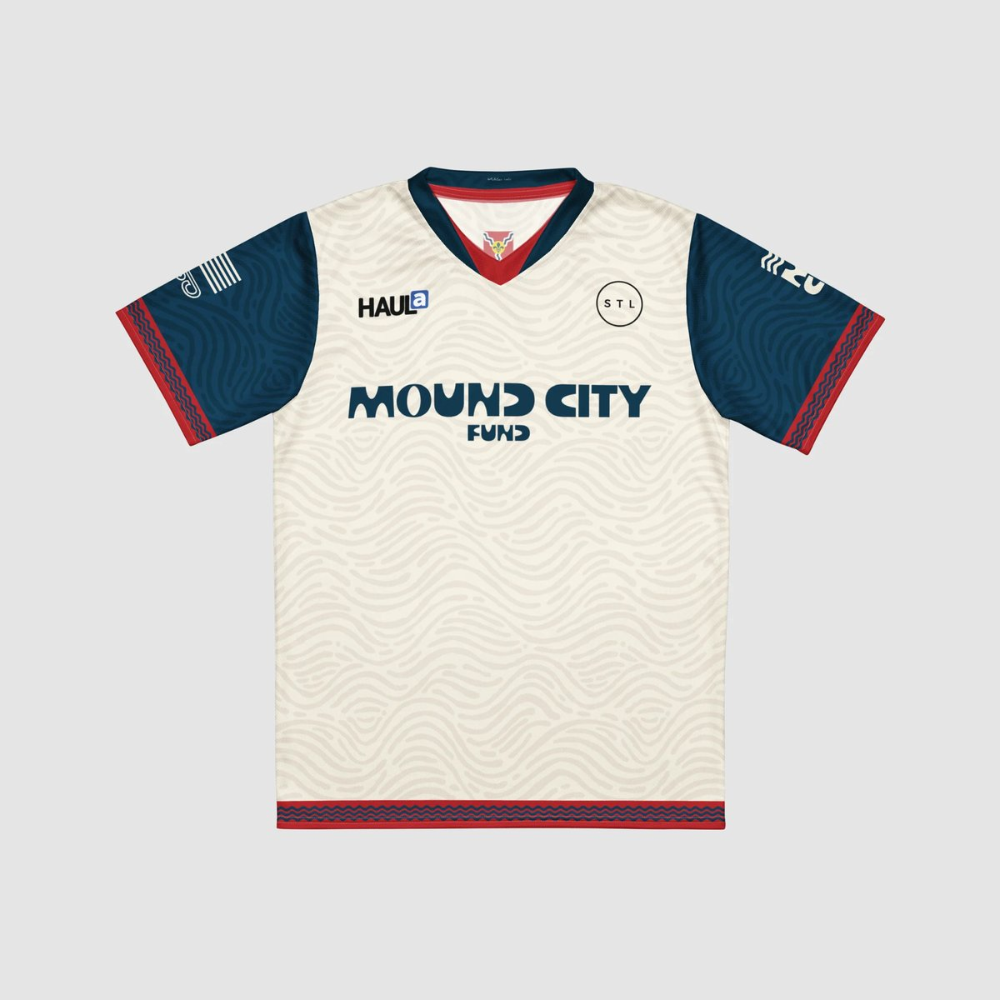

Make a Gift
Grants cover up to 20% of qualified redevelopment costs, and every donated dollar can mobilize an estimated four to five dollars of owner and lender investment in St. Louis housing. Donor capital is the smallest slice of each project and the decisive one. To understand the impact of your gift, read the economic case.
Mound City Fund is recognized by the IRS as a tax-exempt public charity under Section 501(c)(3) of the Internal Revenue Code, and contributions are tax-deductible to the extent permitted by law. We encourage donors to consult their own tax advisors about their individual circumstances. The policy below governs every gift we receive.
Collaboratives
Giving to the Fund doesn't always look like writing a check. Through collaboratives, partner brands design and sell limited-edition goods and donate the profits to the Fund's grant program, so a purchase becomes an investment in St. Louis housing.

The Giveback Jersey
A limited-edition kit for the Mound City. The cream body carries a topographic pattern tracing the ancient mounds that gave St. Louis its nickname, framed by navy sleeves and red trim drawn from the city flag, with the Fund's name across the chest. Cut in a unisex fit from 100% recycled, moisture-wicking polyester.
All profits from every jersey sold are donated to Mound City Fund and put to work funding home rehabilitation grants in underserved St. Louis neighborhoods.
Shop the Giveback Jersey1. Purpose
This policy governs the acceptance of charitable gifts by Mound City Fund (the "Fund") and the treatment of donor information. Its goals are to protect the Fund's mission and reputation, ensure gifts can be administered consistently with donor intent and applicable law, and give donors confidence that their generosity and their information are handled with care.
2. Tax Status Disclosure
Mound City Fund is a Missouri nonprofit corporation recognized by the Internal Revenue Service as exempt from federal income tax under Section 501(c)(3) of the Internal Revenue Code and classified as a public charity under Section 170(b)(1)(A)(vi). Contributions to the Fund are deductible to the extent allowed by law, and donors should consult their own tax advisors regarding their individual circumstances. The Fund registers and remains in good standing with the Missouri Attorney General as required for charitable solicitation.
3. Gifts the Fund Accepts
The Fund accepts the following without prior Board review: cash, checks, electronic transfers, credit and debit card gifts, and grants from donor-advised funds, foundations, and corporate giving programs. The following require review and approval by the Board or its designee before acceptance: publicly traded securities (which will ordinarily be sold promptly upon receipt), gifts of real estate (subject to title, environmental, and marketability due diligence), closely held business interests, tangible personal property, cryptocurrency, bequests naming the Fund, and any gift subject to restrictions or conditions. In-kind gifts of construction materials or professional services relevant to the Fund's grant program may be accepted where a bona fide program use exists and valuation responsibility remains with the donor.
4. Gifts the Fund Declines
The Fund reserves the right to decline any gift. It will decline gifts that: are conditioned on the selection of a specific grant recipient or otherwise attempt to direct charitable benefit to a designated individual; impose restrictions inconsistent with the Fund's mission, governing documents, or grant guidelines; would create unacceptable liability, carrying costs, or reputational risk; or arise from activities inconsistent with the Fund's values or applicable law. Restricted gifts consistent with the mission (for example, restricted to a particular neighborhood or program) are welcome, and the Fund will honor documented restrictions or return the gift if it cannot.
5. Acknowledgment and Use of Gifts
The Fund provides a written acknowledgment for every gift, including the statement required by federal law for gifts of $250 or more as to whether goods or services were provided in exchange. Unless a donor documents a restriction that the Fund accepts, gifts are unrestricted and will be applied where they best advance the mission, including grantmaking, program delivery costs, and reasonable administration. The Fund does not pay finder's fees or commissions for gifts and does not provide tax, legal, or financial advice to donors; donors are encouraged to consult independent advisors, particularly for non-cash and planned gifts.
6. Donor Privacy
The Fund does not sell, rent, trade, or share its donor list with any third party. Donor information is collected solely to process gifts, provide acknowledgments and receipts, comply with legal requirements, and communicate with donors about the Fund's work. Donors may opt out of communications at any time and may request anonymity in any public recognition, which the Fund will honor. Payment card information is processed through third-party payment processors and is not stored by the Fund. Donor records are accessible only to those directors, officers, staff, and professional advisors who need them to perform their duties. Requests to review or correct donor information may be directed to the Fund at the contact address on its website.
Adopted by the Board of Directors of Mound City Fund. This document is provided for general information; it is not legal, tax, or financial advice.